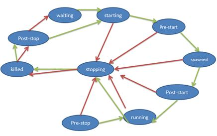
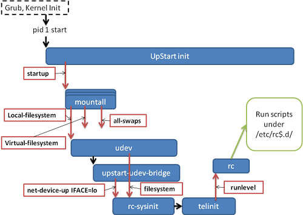

在 IBM Bluemix 云平台上开发并部署您的下一个应用。
Upstart 简介
假如您使用的 Linux 发行版是 Ubuntu，很可能会发现在您的计算机上找不到/etc/inittab 文件了，这是因为 Ubuntu 使用了一种被称为 upstart 的新型 init 系统。
开发 Upstart 的缘由
大约在 2006 年或者更早的时候， Ubuntu 开发人员试图将 Linux 安装在笔记本电脑上。在这期间技术人员发现经典的 sysvinit 存在一些问题：它不适合笔记本环境。这促使程序员 Scott James Remnant 着手开发 upstart。
当 Linux 内核进入 2.6 时代时，内核功能有了很多新的更新。新特性使得 Linux 不仅是一款优秀的服务器操作系统，也可以被用于桌面系统，甚至嵌入式设备。桌面系统或便携式设备的一个特点是经常重启，而且要频繁地使用硬件热插拔技术。在现代计算机系统中，硬件繁多、接口有限，人们并非将所有设备都始终连接在计算机上，比如 U 盘平时并不连接电脑，使用时才插入 USB 插口。因此，当系统上电启动时，一些外设可能并没有连接。而是在启动后当需要的时候才连接这些设备。在 2.6 内核支持下，一旦新外设连接到系统，内核便可以自动实时地发现它们，并初始化这些设备，进而使用它们。这为便携式设备用户提供了很大的灵活性。
可是这些特性为 sysvinit 带来了一些挑战。当系统初始化时，需要被初始化的设备并没有连接到系统上；比如打印机。为了管理打印任务，系统需要启动 CUPS 等服务，而如果打印机没有接入系统的情况下，启动这些服务就是一种浪费。Sysvinit 没有办法处理这类需求，它必须一次性把所有可能用到的服务都启动起来，即使打印机并没有连接到系统，CUPS 服务也必须启动。
还有网络共享盘的挂载问题。在/etc/fstab 中，可以指定系统自动挂载一个网络盘，比如 NFS，或者 iSCSI 设备。在本文的第一部分 sysvinit 的简介中可以看到，sysvinit 分析/etc/fstab 挂载文件系统这个步骤是在网络启动之前。可是如果网络没有启动，NFS 或者 iSCSI 都不可访问，当然也无法进行挂载操作。Sysvinit 采用 netdev 的方式来解决这个问题，即/etc/fstab 发现 netdev 属性挂载点的时候，不尝试挂载它，在网络初始化并使能之后，还有一个专门的 netfs 服务来挂载所有这些网络盘。这是一个不得已的补救方法，给管理员带来不便。部分新手管理员甚至从来也没有听说过 netdev 选项，因此经常成为系统管理的一个陷阱。
针对以上种种情况，Ubuntu 开发人员在评估了当时的几个可选 init 系统之后，决定重新设计和开发一个全新的 init 系统，即 UpStart。UpStart 基于事件机制，比如 U 盘插入 USB 接口后，udev 得到内核通知，发现该设备，这就是一个新的事件。UpStart 在感知到该事件之后触发相应的等待任务，比如处理/etc/fstab 中存在的挂载点。采用这种事件驱动的模式，upstart 完美地解决了即插即用设备带来的新问题。
此外，采用事件驱动机制也带来了一些其它有益的变化，比如加快了系统启动时间。sysvinit 运行时是同步阻塞的。一个脚本运行的时候，后续脚本必须等待。这意味着所有的初始化步骤都是串行执行的，而实际上很多服务彼此并不相关，完全可以并行启动，从而减小系统的启动时间。在 Linux 大量应用于服务器的时代，系统启动时间也许还不那么重要；然而对于桌面系统和便携式设备，启动时间的长短对用户体验影响很大。此外云计算等新的 Server 端技术也往往需要单个设备可以更加快速地启动。
UpStart 满足了这些需求，目前不仅桌面系统 Ubuntu 采用了 UpStart，甚至企业级服务器级的 RHEL 也默认采用 UpStart 来替换 sysvinit 作为 init 系统。
Upstart 的特点
UpStart 解决了之前提到的 sysvinit 的缺点。采用事件驱动模型，UpStart 可以：
- 更快地启动系统
- 当新硬件被发现时动态启动服务
- 硬件被拔除时动态停止服务
这些特点使得 UpStart 可以很好地应用在桌面或者便携式系统中，处理这些系统中的动态硬件插拔特性。
Upstart 概念和术语
Upstart 的基本概念和设计清晰明确。UpStart 主要的概念是 job 和 event。Job 就是一个工作单元，用来完成一件工作，比如启动一个后台服务，或者运行一个配置命令。每个 Job 都等待一个或多个事件，一旦事件发生，upstart 就触发该 job 完成相应的工作。
Job
Job 就是一个工作的单元，一个任务或者一个服务。可以理解为 sysvinit 中的一个服务脚本。有三种类型的工作：
- task job；
- service job；
- abstract job；
task job 代表在一定时间内会执行完毕的任务，比如删除一个文件；
service job 代表后台服务进程，比如 apache httpd。这里进程一般不会退出，一旦开始运行就成为一个后台精灵进程，由 init 进程管理，如果这类进程退出，由 init 进程重新启动，它们只能由 init 进程发送信号停止。它们的停止一般也是由于所依赖的停止事件而触发的，不过 upstart 也提供命令行工具，让管理人员手动停止某个服务；
Abstract job 仅由 upstart 内部使用，仅对理解 upstart 内部机理有所帮助。我们不用关心它。
除了以上的分类之外，还有另一种工作（Job）分类方法。Upstart 不仅可以用来为整个系统的初始化服务，也可以为每个用户会话（session）的初始化服务。系统的初始化任务就叫做 system job，比如挂载文件系统的任务就是一个 system job；用户会话的初始化服务就叫做 session job。
Job 生命周期
Upstart 为每个工作都维护一个生命周期。一般来说，工作有开始，运行和结束这几种状态。为了更精细地描述工作的变化，Upstart 还引入了一些其它的状态。比如开始就有开始之前(pre-start)，即将开始(starting)和已经开始了(started)几种不同的状态，这样可以更加精确地描述工作的当前状态。
工作从某种初始状态开始，逐渐变化，或许要经历其它几种不同的状态，最终进入另外一种状态，形成一个状态机。在这个过程中，当工作的状态即将发生变化的时候，init 进程会发出相应的事件（event）。
表 1.Upstart 中 Job 的可能状态
| 状态名 | 含义 |
|---|---|
| Waiting | 初始状态 |
| Starting | Job 即将开始 |
| pre-start | 执行 pre-start 段，即任务开始前应该完成的工作 |
| Spawned | 准备执行 script 或者 exec 段 |
| post-start | 执行 post-start 动作 |
| Running | interim state set after post-start section processed denoting job is running (But it may have no associated PID!) |
| pre-stop | 执行 pre-stop 段 |
| Stopping | interim state set after pre-stop section processed |
| Killed | 任务即将被停止 |
| post-stop | 执行 post-stop 段 |
图 1 展示了 Job 的状态机。
图 1. Job’s life cycle
其中有四个状态会引起 init 进程发送相应的事件，表明该工作的相应变化：
- Starting
- Started
- Stopping
- Stopped
而其它的状态变化不会发出事件。那么我们接下来就来看看事件的详细含义吧。
事件 Event
顾名思义，Event 就是一个事件。事件在 upstart 中以通知消息的形式具体存在。一旦某个事件发生了，Upstart 就向整个系统发送一个消息。没有任何手段阻止事件消息被 upstart 的其它部分知晓，也就是说，事件一旦发生，整个 upstart 系统中所有工作和其它的事件都会得到通知。
Event 可以分为三类: signal，methods 或者 hooks。
Signals
Signal 事件是非阻塞的，异步的。发送一个信号之后控制权立即返回。
Methods
Methods 事件是阻塞的，同步的。
Hooks
Hooks 事件是阻塞的，同步的。它介于 Signals 和 Methods 之间，调用发出 Hooks 事件的进程必须等待事件完成才可以得到控制权，但不检查事件是否成功。
事件是个非常抽象的概念，下面我罗列出一些常见的事件，希望可以帮助您进一步了解事件的含义：
- 系统上电启动，init 进程会发送"start"事件
- 根文件系统可写时，相应 job 会发送文件系统就绪的事件
- 一个块设备被发现并初始化完成，发送相应的事件
- 某个文件系统被挂载，发送相应的事件
- 类似 atd 和 cron，可以在某个时间点，或者周期的时间点发送事件
- 另外一个 job 开始或结束时，发送相应的事件
- 一个磁盘文件被修改时，可以发出相应的事件
- 一个网络设备被发现时，可以发出相应的事件
- 缺省路由被添加或删除时，可以发出相应的事件
不同的 Linux 发行版对 upstart 有不同的定制和实现，实现和支持的事件也有所不同，可以用man 7 upstart-events来查看事件列表。
Job 和 Event 的相互协作
Upstart 就是由事件触发工作运行的一个系统，每一个程序的运行都由其依赖的事件发生而触发的。
系统初始化的过程是在工作和事件的相互协作下完成的，可以大致描述如下：系统初始化时，init 进程开始运行，init 进程自身会发出不同的事件，这些最初的事件会触发一些工作运行。每个工作运行过程中会释放不同的事件，这些事件又将触发新的工作运行。如此反复，直到整个系统正常运行起来。
究竟哪些事件会触发某个工作的运行？这是由工作配置文件定义的。
工作配置文件
任何一个工作都是由一个工作配置文件（Job Configuration File）定义的。这个文件是一个文本文件，包含一个或者多个小节（stanza）。每个小节是一个完整的定义模块，定义了工作的一个方面，比如 author 小节定义了工作的作者。工作配置文件存放在/etc/init 下面，是以.conf 作为文件后缀的文件。
清单 1. 一个最简单的工作配置文件
#This is a simple demo of Job Configure file #This line is comment, start with # #Stanza 1, The author author “Liu Ming” #Stanza 2, Description description “This job only has author and description, so no use, just a demo”
上面的例子不会产生任何作用，一个真正的工作配置文件会包含很多小节，其中比较重要的小节有以下几个：
"expect" Stanza
Upstart 除了负责系统的启动过程之外，和 SysVinit 一样，Upstart 还提供一系列的管理工具。当系统启动之后，管理员可能还需要进行维护和调整，比如启动或者停止某项系统服务。或者将系统切换到其它的工作状态，比如改变运行级别。本文后续将详细介绍 Upstart 的管理工具的使用。
为了启动，停止，重启和查询某个系统服务。Upstart 需要跟踪该服务所对应的进程。比如 httpd 服务的进程 PID 为 1000。当用户需要查询 httpd 服务是否正常运行时，Upstart 就可以利用 ps 命令查询进程 1000，假如它还在正常运行，则表明服务正常。当用户需要停止 httpd 服务时，Upstart 就使用 kill 命令终止该进程。为此，Upstart 必须跟踪服务进程的进程号。
部分服务进程为了将自己变成后台精灵进程(daemon)，会采用两次派生(fork)的技术，另外一些服务则不会这样做。假如一个服务派生了两次，那么 UpStart 必须采用第二个派生出来的进程号作为服务的 PID。但是，UpStart 本身无法判断服务进程是否会派生两次，为此在定义该服务的工作配置文件中必须写明 expect 小节，告诉 UpStart 进程是否会派生两次。
Expect 有两种，"expect fork"表示进程只会 fork 一次；"expect daemonize"表示进程会 fork 两次。
"exec" Stanza 和"script" Stanza
一个 UpStart 工作一定需要做些什么，可能是运行一条 shell 命令，或者运行一段脚本。用"exec"关键字配置工作需要运行的命令；用"script"关键字定义需要运行的脚本。
清单 2 显示了 exec 和 script 的用法：
清单 2.script 例子
# mountall.conf description “Mount filesystems on boot” start on startup stop on starting rcS ... script . /etc/default/rcS [ -f /forcefsck ] && force_fsck=”--force-fsck” [ “$FSCKFIX”=”yes” ] && fsck_fix=”--fsck-fix” ... exec mountall –daemon $force_fsck $fsck_fix end script ...
这是 mountall 的例子，该工作在系统启动时运行，负责挂载所有的文件系统。该工作需要执行复杂的脚本，由"script"关键字定义；在脚本中，使用了 exec 来执行 mountall 命令。
"start on" Stanza 和"stop on" Stanza
"start on"定义了触发工作的所有事件。"start on"的语法很简单，如下所示：
start on EVENT [[KEY=]VALUE]... [and|or...]
EVENT 表示事件的名字，可以在 start on 中指定多个事件，表示该工作的开始需要依赖多个事件发生。多个事件之间可以用 and 或者 or 组合，"表示全部都必须发生"或者"其中之一发生即可"等不同的依赖条件。除了事件发生之外，工作的启动还可以依赖特定的条件，因此在 start on 的 EVENT 之后，可以用 KEY=VALUE 来表示额外的条件，一般是某个环境变量(KEY)和特定值(VALUE)进行比较。如果只有一个变量，或者变量的顺序已知，则 KEY 可以省略。
"stop on"和"start on"非常类似，只不过是定义工作在什么情况下需要停止。
代码清单 3 是"start on"和"stop on"的一个例子。
清单 3. start on/ stop on 例子
#dbus.conf description “D-Bus system message bus” start on local-filesystems stop on deconfiguring-networking …
D-Bus 是一个系统消息服务，上面的配置文件表明当系统发出 local-filesystems 事件时启动 D-Bus；当系统发出 deconfiguring-networking 事件时，停止 D-Bus 服务。
Session Init
UpStart 还可以用于管理用户会话的初始化。在我写这篇文章的今天，多数 Linux 发行版还没有使用 UpStart 管理会话。只有在 Ubuntu Raring 版本中，使用 UpStart 管理用户会话的初始化过程。
首先让我们了解一下 Session 的概念。Session 就是一个用户会话，即用户从远程或者本地登入系统开始工作，直到用户退出。这整个过程就构成一个会话。
每个用户的使用习惯和使用方法都不相同，因此用户往往需要为自己的会话做一个定制，比如添加特定的命令别名，启动特殊的应用程序或者服务，等等。这些工作都属于对特定会话的初始化操作，因此可以被称为 Session Init。
用户使用 Linux 可以有两种模式：字符模式和图形界面。在字符模式下，会话初始化相对简单。用户登录后只能启动一个 Shell，通过 shell 命令使用系统。各种 shell 程序都支持一个自动运行的启动脚本，比如~/.bashrc。用户在这些脚本中加入需要运行的定制化命令。字符会话需求简单，因此这种现有的机制工作的很好。
在图形界面下，事情就变得复杂一些。用户登录后看到的并不是一个 shell 提示符，而是一个桌面。一个完整的桌面环境由很多组件组成。
一个桌面环境包括 window manager，panel 以及其它一些定义在/usr/share/gnome-session/sessions/下面的基本组件；此外还有一些辅助的应用程序，共同帮助构成一个完整的方便的桌面，比如 system monitors，panel applets，NetworkManager，Bluetooth，printers 等。当用户登录之后，这些组件都需要被初始化，这个过程比字符界面要复杂的多。目前启动各种图形组件和应用的工作由 gnome-session 完成。过程如下：
以 Ubuntu 为例，当用户登录 Ubuntu 图形界面后，显示管理器(Display Manager)lightDM 启动 Xsession。Xsession 接着启动 gnome-session，gnome-session 负责其它的初始化工作，然后就开始了一个 desktop session。
图 2.传统 desktop session 启动过程
init |- lightdm | |- Xorg | |- lightdm ---session-child | |- gnome-session --session=ubuntu | |- compiz | |- gwibber | |- nautilus | |- nm-applet | : | : | |- dbus-daemon --session | : :
这个过程有一些缺点（和 sysVInit 类似）。一些应用和组件其实并不需要在会话初始化过程中启动，更好的选择是在需要它们的时候才启动。比如 update-notifier 服务，该服务不停地监测几个文件系统路径，一旦这些路径上发现可以更新的软件包，就提醒用户。这些文件系统路径包括新插入的 DVD 盘等。Update-notifier 由 gnome-session 启动并一直运行着，在多数情况下，用户并不会插入新的 DVD，此时 update-notifier 服务一直在后台运行并消耗系统资源。更好的模式是当用户插入 DVD 的时候再运行 update-notifier。这样可以加快启动时间，减小系统运行过程中的内存等系统资源的开销。对于移动，嵌入式等设备等这还意味着省电。除了 Update-notifier 服务之外，还有其它一些类似的服务。比如 Network Manager，一天之内用户很少切换网络设备，所以大部分时间 Network Manager 服务仅仅是在浪费系统资源；再比如 backup manager 等其它常驻内存，后台不间断运行却很少真正被使用的服务。
用 UpStart 的基于事件的按需启动的模式就可以很好地解决这些问题，比如用户插入网线的时候才启动 Network Manager，因为用户插入网线表明需要使用网络，这可以被称为按需启动。
下图描述了采用 UpStart 之后的会话初始化过程。
图 3.采用 Upstart 的 Desktop session init 过程
init |- lightdm | |- Xorg | |- lightdm ---session-child | |- session-init # <-- upstart running as normal user | |- dbus-daemon --session | |- gnome-session --session=ubuntu | |- compiz | |- gwibber | |- nautilus | |- nm-applet | : | : : :
UpStart 使用
有两种人员需要了解 Upstart 的使用。第一类是系统开发人员，比如 MySQL 的开发人员。它们需要了解如何编写工作配置文件，以便用 UpStart 来管理服务。比如启动，停止 MySQL 服务。
另外一种情况是系统管理员，它们需要掌握 Upstart 的管理命令以便配置和管理系统的初始化，管理系统服务。
系统开发人员需要了解的 UpStart 知识
系统开发人员不仅需要掌握工作配置文件的写法，还需要了解一些针对服务进程编程上的要求。本文仅列出了少数工作配置文件的语法。要全面掌握工作配置文件的写法，需要详细阅读 Upstart 的手册。这里让我们来分析一下如何用 Upstart 来实现传统的运行级别，进而了解如何灵活使用工作配置文件。
Upstart 系统中的运行级别
Upstart 的运作完全是基于工作和事件的。工作的状态变化和运行会引起事件，进而触发其它工作和事件。
而传统的 Linux 系统初始化是基于运行级别的，即 SysVInit。因为历史的原因，Linux 上的多数软件还是采用传统的 SysVInit 脚本启动方式，并没有为 UpStart 开发新的启动脚本，因此即便在 Debian 和 Ubuntu 系统上，还是必须模拟老的 SysVInit 的运行级别模式，以便和多数现有软件兼容。
虽然 Upstart 本身并没有运行级别的概念，但完全可以用 UpStart 的工作模拟出来。让我们完整地考察一下 UpStart 机制下的系统启动过程。
系统启动过程
下图描述了 UpStart 的启动过程。
图 4.UpStart 启动过程
系统上电后运行 GRUB 载入内核。内核执行硬件初始化和内核自身初始化。在内核初始化的最后，内核将启动 pid 为 1 的 init 进程，即 UpStart 进程。
Upstart 进程在执行了一些自身的初始化工作后，立即发出"startup"事件。上图中用红色方框加红色箭头表示事件，可以在左上方看到"startup"事件。
所有依赖于"startup"事件的工作被触发，其中最重要的是 mountall。mountall 任务负责挂载系统中需要使用的文件系统，完成相应工作后，mountall 任务会发出以下事件：local-filesystem，virtual-filesystem，all-swaps，
其中 virtual-filesystem 事件触发 udev 任务开始工作。任务 udev 触发 upstart-udev-bridge 的工作。Upstart-udev-bridge 会发出 net-device-up IFACE=lo 事件，表示本地回环 IP 网络已经准备就绪。同时，任务 mountall 继续执行，最终会发出 filesystem 事件。
此时，任务 rc-sysinit 会被触发，因为 rc-sysinit 的 start on 条件如下：
start on filesystem and net-device-up IFACE=lo
任务 rc-sysinit 调用 telinit。Telinit 任务会发出 runlevel 事件，触发执行/etc/init/rc.conf。
rc.conf 执行/etc/rc$.d/目录下的所有脚本，和 SysVInit 非常类似，读者可以参考本文第一部分的描述。
程序开发时需要注意的事项
作为程序开发人员，在编写系统服务时，需要了解 UpStart 的一些特殊要求。只有符合这些要求的软件才可以被 UpStart 管理。
规则一，派生次数需声明。
很多 Linux 后台服务都通过派生两次的技巧将自己变成后台服务程序。如果您编写的服务也采用了这个技术，就必须通过文档或其它的某种方式明确地让 UpStart 的维护人员知道这一点，这将影响 UpStart 的 expect stanza，我们在前面已经详细介绍过这个 stanza 的含义。
规则二，派生后即可用。
后台程序在完成第二次派生的时候，必须保证服务已经可用。因为 UpStart 通过派生计数来决定服务是否处于就绪状态。
规则三，遵守 SIGHUP 的要求。
UpStart 会给精灵进程发送 SIGHUP 信号，此时，UpStart 希望该精灵进程做以下这些响应工作：
•完成所有必要的重新初始化工作，比如重新读取配置文件。这是因为 UpStart 的命令"initctl reload"被设计为可以让服务在不重启的情况下更新配置。
•精灵进程必须继续使用现有的 PID，即收到 SIGHUP 时不能调用 fork。如果服务必须在这里调用 fork，则等同于派生两次，参考上面的规则一的处理。这个规则保证了 UpStart 可以继续使用 PID 管理本服务。
规则四，收到 SIGTEM 即 shutdown。
•当收到 SIGTERM 信号后，UpStart 希望精灵进程进程立即干净地退出，释放所有资源。如果一个进程在收到 SIGTERM 信号后不退出，Upstart 将对其发送 SIGKILL 信号。
系统管理员需要了解的 Upstart 命令
作为系统管理员，一个重要的职责就是管理系统服务。比如系统服务的监控，启动，停止和配置。UpStart 提供了一系列的命令来完成这些工作。其中的核心是initctl，这是一个带子命令风格的命令行工具。
比如可以用 initctl list 来查看所有工作的概况：
$initctl list alsa-mixer-save stop/waiting avahi-daemon start/running, process 690 mountall-net stop/waiting rc stop/waiting rsyslog start/running, process 482 screen-cleanup stop/waiting tty4 start/running, process 859 udev start/running, process 334 upstart-udev-bridge start/running, process 304 ureadahead-other stop/waiting
这是在 Ubuntu10.10 系统上的输出，其它的 Linux 发行版上的输出会有所不同。第一列是工作名，比如 rsyslog。第二列是工作的目标；第三列是工作的状态。
此外还可以用 initctl stop 停止一个正在运行的工作；用 initctl start 开始一个工作；还可以用 initctl status 来查看一个工作的状态；initctl restart 重启一个工作；initctl reload 可以让一个正在运行的服务重新载入配置文件。这些命令和传统的 service 命令十分相似。
表 2.service 命令和 initctl 命令对照表
| Service 命令 | UpStart initctl 命令 |
|---|---|
| service start | initctl start |
| service stop | initctl stop |
| service restart | initctl restart |
| service reload | initctl reload |
很多情况下管理员并不喜欢子命令风格，因为需要手动键入的字符太多。UpStart 还提供了一些快捷命令来简化 initctl，实际上这些命令只是在内部调用相应的 initctl 命令。比如 reload，restart，start，stop 等等。启动一个服务可以简单地调用
start <job>
这和执行 initctl start <job>是一样的效果。
一些命令是为了兼容其它系统(主要是 sysvinit)，比如显示 runlevel 用/sbin/runlevel 命令：
$runlevel N 2
这个输出说明当前系统的运行级别为 2。而且系统没有之前的运行级别，也就是说在系统上电启动进入预定运行级别之后没有再修改过运行级别。
那么如何修改系统上电之后的默认运行级别呢？
在 Upstart 系统中，需要修改/etc/init/rc-sysinti.conf 中的 DEFAULT_RUNLEVEL 这个参数，以便修改默认启动运行级别。这一点和 sysvinit 的习惯有所不同，大家需要格外留意。
还有一些随 UpStart 发布的小工具，用来帮助开发 UpStart 或者诊断 UpStart 的问题。比如 init-checkconf 和 upstart-monitor
还可以使用 initctl 的 emit 命令从命令行发送一个事件。
#initctl emit <event>
这一般是用于 UpStart 本身的排错。
Upstart 小结
可以看到，UpStart 的设计比 SysVInit 更加先进。多数 Linux 发行版上已经不再使用 SysVInit，一部分发行版采用了 UpStart，比如 Ubuntu；而另外一些比如 Fedora，采用了一种被称为 systemd 的 init 系统。Systemd 出现的比 UpStart 更晚，但发展迅速，虽然 UpStart 也还在积极开发并被越来越多地应用，但 systemd 似乎发展更快，我将在下一篇文章中再介绍 systemd。
参考资料
学习
- Upstart 项目发起人 Scott 的博客文章 upstart-in-universe，有很好的背景描述和实现的概括。值得仔细阅读。
- LWN 上的文章 Upstart for user sessions 描述了 UpStart 用于 session init 的进展情况，并给出了一些重要的其它参考资料，是学习 Session Init 的好材料。
- 维基百科上关于 upstart 的介绍，对 upstart 的原理和背景有很好的描述。
- Ubuntu 维基上关于 upstart 的介绍，介绍了 upstart 项目的背景，use case，基本概念和设计思想，是非常好的参考资料。
- 在 developerWorks Linux 专区寻找为 Linux 开发人员（包括 Linux 新手入门）准备的更多参考资料。
讨论
- 加入 developerWorks 中文社区。查看开发人员推动的博客、论坛、组和维基，并与其它 developerWorks 用户交流。
条评论


IBM Bluemix 资源中心
文章、教程、演示，帮助您构建、部署和管理云应用。

developerWorks 中文社区
立即加入来自 IBM 的专业 IT 社交网络。

Bluemixathon 挑战赛
为灾难恢复构建应用，赢取现金大奖。
请 登录 或 注册 后发表评论。
注意：评论中不支持 HTML 语法